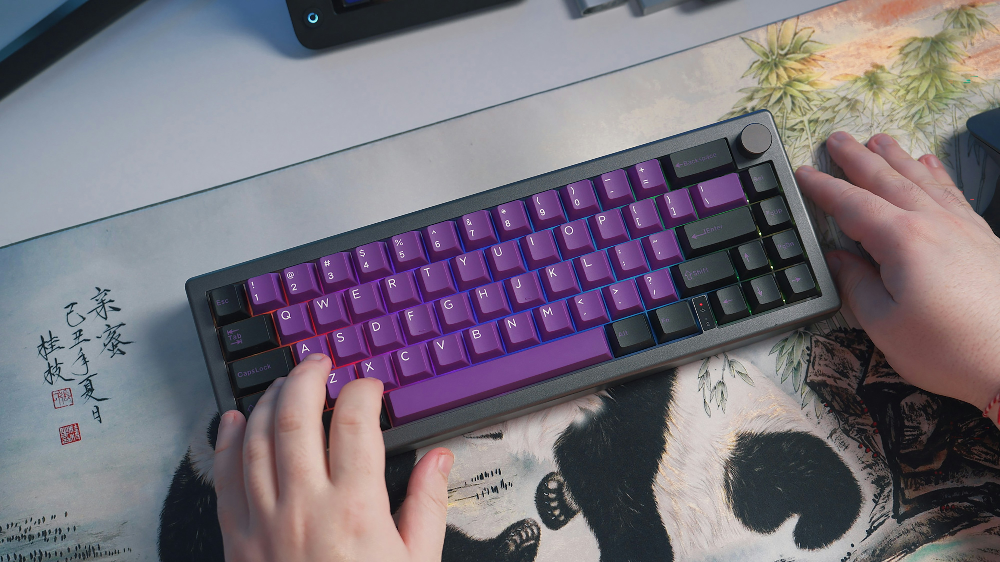

Introduction to Input Devices:
Input devices are hardware components that allow users to interact with computers and other electronic devices by entering data and commands. These devices play a crucial role in enabling communication between the user and the machine.
Some Popular Input Devices:
- Keyboard: A standard input device used to type text, numbers, and execute commands through keys.
- Mouse: A pointing device that allows the user to interact with a graphical interface by moving a cursor on the screen.
- Scanner: Captures images or documents and converts them into digital formats.
- Microphone: Converts sound into digital signals for input into the computer, commonly used for voice recognition and audio recording.
- Touchscreen: Combines both input and output, allowing the user to interact with the device directly by touching the screen.

Conclusion:
In summary, input devices are vital components that allow users to efficiently communicate with machines, whether through text, voice, touch, or other forms of interaction. The development of input devices continues to evolve, improving user experience and expanding the ways we interact with technology.